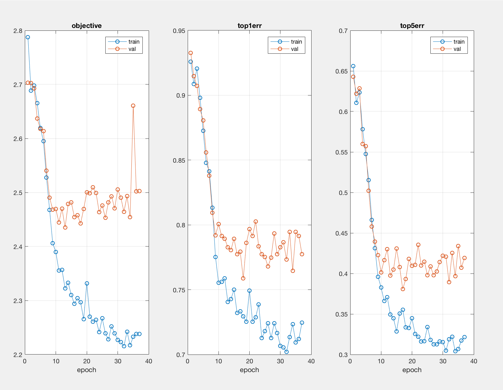

Project 6 / Deep Learning
This project is an introduction to deep learning tools for computer vision. Deep convolutional networks is designed and changed for scene recognition using the MatConvNet toolbox. In project 4, we used a bag of features representations to do scene classification and achieved about 70% accuracy. For this project, a better accuracy can be achieved. The project has two parts:
Part 1 - train a deep network
The previous code of part 1 can only achieve about 25% accuracy. Problems are needed to be solved to improve the accuracy.
Jitter - don't have enough training data
I updated getBatch() function to include flipped images. However, I randomly chose images to flip. The accuracy does not change.
for i = 1:1:numImg
if (rand(1) < 0.5)
im(:, :, 1, i) = fliplr(im(:, :, 1, i));
end
end
not zero-centered image
Modify proj6_part1_setup_data.m so that it computes the mean image and then subtracts the mean from all images before returning imdb. The accuracy is around 50%.
cur_image = cur_image - mean(mean(cur_image));

not regularized
We use drop out regularization by adding drop out layer. Drop out layer randomly turns off network connections at training time to fight overfitting. This prevents a unit in one layer from relying too strongly on a single unit in the previous layer.
net.layers{end+1} = struct('type','dropout','rate',0.5);
not regularized
We use drop out regularization by adding drop out layer. Drop out layer randomly turns off network connections at training time to fight overfitting. This prevents a unit in one layer from relying too strongly on a single unit in the previous layer.
net.layers{end+1} = struct('type','dropout','rate',0.5);
isn't deep
Adding another conv layer, max-pool layer and relu layer, as well. The learning result of the deeper network is not good as the reulst fo the shallow network. The reason might be that the number of epoch is not big enough for reaching the best learning result.
net.layers{end+1} = struct('type', 'conv', ...
'weights', {{f*randn(5,5,1,10, 'single'), zeros(1, 10, 'single')}}, ...
'stride', 1, ...
'pad', 0, ...
'name', 'conv1') ;
net.layers{end+1} = struct('type', 'pool', ...
'method', 'max', ...
'pool', [3 3], ...
'stride', 2, ...
'pad', 0) ;
net.layers{end+1} = struct('type', 'relu') ;

is slow
Add normalization to help. In particular, let's add a batch normalization layer after each convolutional layer except for the last.
net = insertBnorm(net, layer_index)
Part 2 - fine-tuning a pre-trained deep network
proj6_part2_cnn_init.m
net.layers{end}={};
net.layers{end-1}={};
net.layers{end-3} = struct('type','dropout','rate',0.3);
net.layers{end} = struct('type','dropout','rate',0.3);

proj6_part2_setup_data.m
avg1=mean(mean(cur_image(:,:,1)));
avg2=mean(mean(cur_image(:,:,2)));
avg3=mean(mean(cur_image(:,:,3)));
imdb.images.data(:,:,1,image_counter) = cur_image(:,:,1)-avg1*ones(224,224);
imdb.images.data(:,:,2,image_counter) = cur_image(:,:,2)-avg2*ones(224,224);
imdb.images.data(:,:,3,image_counter) = cur_image(:,:,3)-avg3*ones(224,224);
The final result close to 90% with less than 20 epochs.